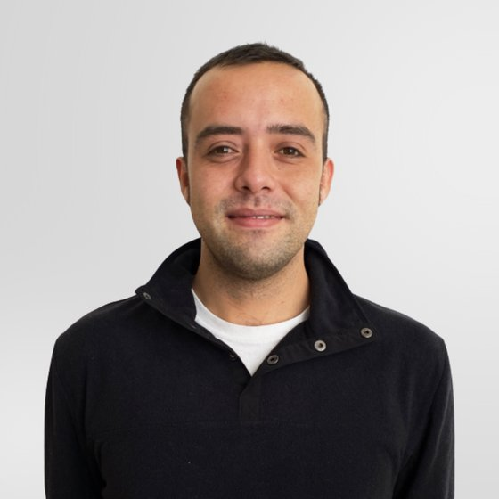
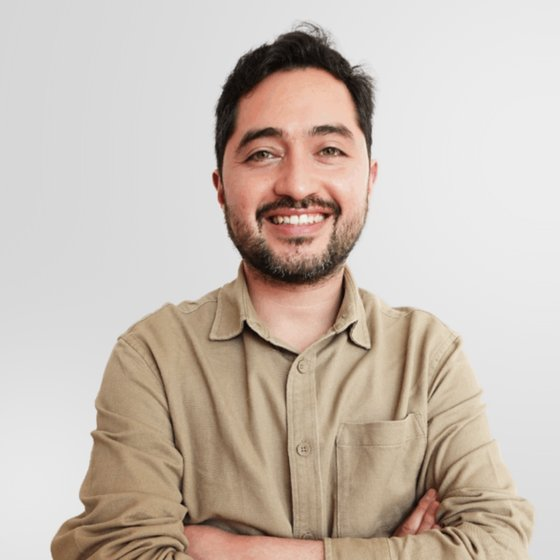
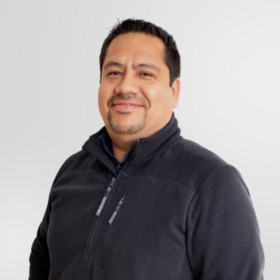
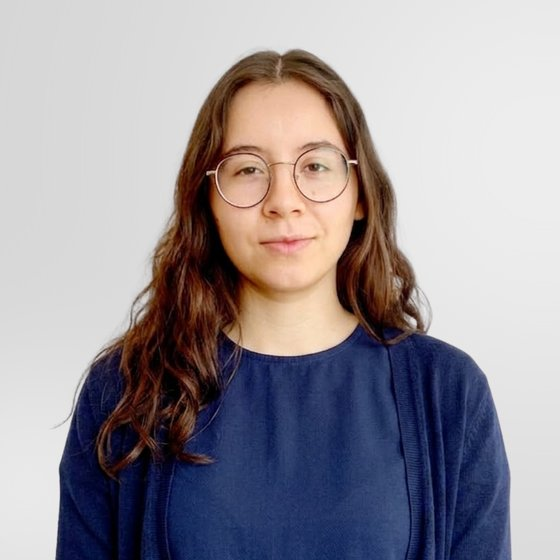

Más de 10 años transformando ciencia en tecnología.
Pewman Innovation es una empresa chilena de biotecnología que desarrolla soluciones sustentables para aumentar la resiliencia de los cultivos frente a los desafíos del cambio climático.
Desde hace más de una década, trabajamos en la investigación, desarrollo y validación de tecnologías biológicas capaces de ayudar a la agricultura a enfrentar factores de estrés ambiental como heladas, sequía y temperaturas extremas. Nuestro propósito es transformar conocimiento científico de frontera en soluciones con impacto real para los productores agrícolas y el planeta.
De los ecosistemas más extremos del planeta a soluciones que hoy protegen cultivos en Chile y el mundo.

Nuestra historia comenzó explorando algunos de los ecosistemas más extremos del planeta, incluyendo la Antártica, el Desierto de Atacama, la Patagonia, volcanes e islas australes de Chile.
Estos ambientes albergan microorganismos extraordinarios que han evolucionado durante miles de años para sobrevivir en condiciones de frío extremo, escasez de agua, alta radiación UV y otros desafíos ambientales. Comprender estos mecanismos de adaptación nos permitió identificar nuevas oportunidades para fortalecer la resiliencia de los cultivos frente al cambio climático.

No utilizamos microorganismos descubiertos por otros. Descubrimos, aislamos, caracterizamos y desarrollamos nuestras propias tecnologías a partir de microorganismos provenientes de algunos de los ecosistemas más extremos del planeta.
A diferencia de muchas soluciones biológicas del mercado, conocemos en profundidad nuestros microorganismos, comprendemos sus mecanismos de acción y desarrollamos tecnologías basadas en evidencia científica sólida.
La combinación de este conocimiento con nanotecnología orgánica ha permitido crear una plataforma tecnológica única, diseñada para responder a desafíos agrícolas específicos de manera sustentable y eficiente.

Uno de nuestros principales hitos fue el descubrimiento y caracterización de bacterias asociadas a plantas antárticas, con propiedades capaces de contribuir a la protección frente a bajas temperaturas y otros factores de estrés ambiental.
Este trabajo dio origen a una nueva línea de innovación biotecnológica basada en microorganismos de ecosistemas extremos. Como pioneros en este campo, hoy colaboramos con empresas, productores e instituciones que buscan incorporar ciencia avanzada para enfrentar los desafíos productivos del futuro.
Tras más de 10 años de investigación, desarrollo y validación, nuestras tecnologías han demostrado su eficacia en miles de hectáreas agrícolas, ayudando a productores a enfrentar heladas, déficit hídrico y otros factores asociados al cambio climático.
Nuestro enfoque combina rigurosidad científica, validación en terreno y desarrollo tecnológico, generando soluciones con impacto medible y aplicabilidad comercial.
Lo que comenzó como investigación científica desarrollada en Chile hoy se proyecta a nivel internacional, a través de alianzas estratégicas, programas de validación y colaboraciones con actores del sector agrícola y de innovación.
Fortalecer la resiliencia de la agricultura mediante tecnologías biológicas desarrolladas a partir de microorganismos de ecosistemas extremos.
Convertirnos en referentes globales en biotecnología agrícola, llevando innovación desarrollada en Chile hacia los principales mercados agrícolas del mundo.
Con equipos en Chile, Perú y Europa.




Nuestro crecimiento ha sido acompañado por reconocimientos nacionales e internacionales en innovación, emprendimiento científico y transferencia tecnológica.

Reconocimiento de El Mercurio Innovación, junto a Swiss Business Hub USA, PwC, Nestlé y Corfo.


Conversa con nuestro equipo y descubre cómo nuestra tecnología puede fortalecer tu cultivo.